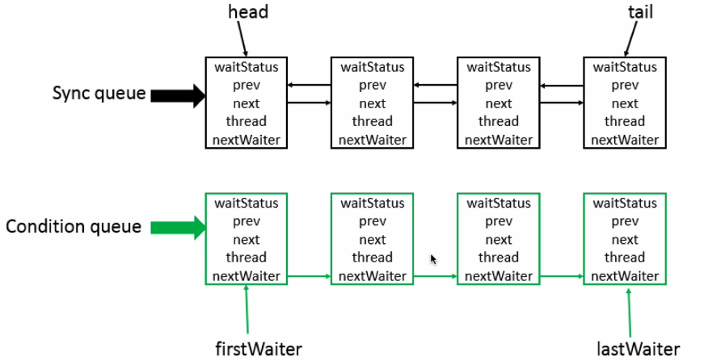
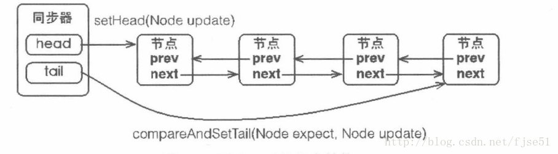
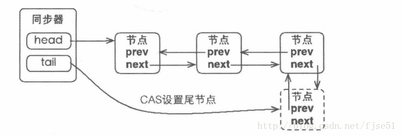
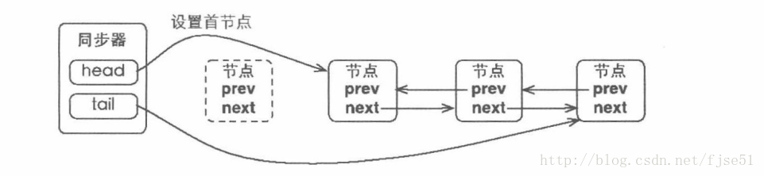
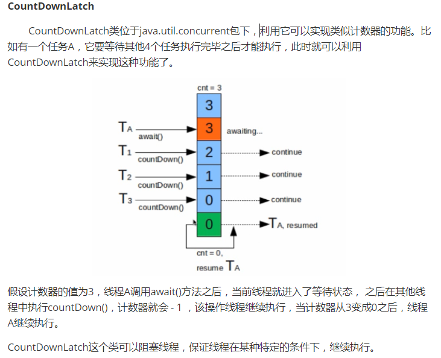
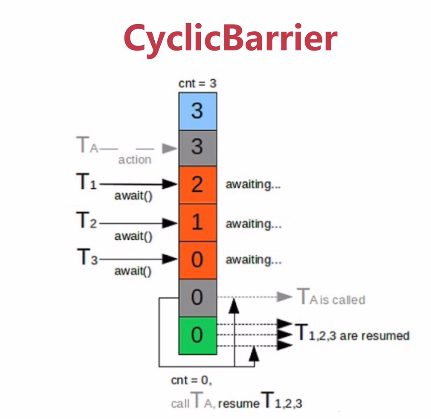

JAVA并发编程与高并发解决方案 - 并发编程 四
版本
作者
内容
2018.4.8
chuIllusions
J.U.C之AQS
J.U.C 之 AQS Introduction AbStractQueuedSynchronizer类，简称AQS，一个用来构建锁和同步器的框架 。从JDK1.5开始，引入了并发包，也就是J.U.C，大大提高了JAVA程序的并发性能，而AQS则是J.U.C的核心，是并发类中核心部分，它提供一个基于FIFO队列，这个队列可以构建锁或其他相关的同步装置的基础框架。
AQS底层数据结构：

底层采用双向链表，是队列的一种实现，因此可以当做是一个队列。其中Sync queue即同步队列，它是双向链表，包括hean结点（主要用作后续的调度）与tail结点。Condition queue不是必须的，单向链表，只有在需要使用到condition的时候才会存在这个单向链表，并且可能存在多个Condition queue
Design
使用Node实现FIFO队列，可以用于构建锁或者其他同步装置的基础框架
利用了一个int类型表示状态。在AQS中，存在一个state成员变量，基于AQS有一个同步组件ReentrantLock，在这个组件中，state表示获取锁的线程数，假如state == 0表示无线程获取锁，state == 1表示已有线程获取锁，state > 1表示锁的数量
使用方法是继承。AQS的设计是基于模板方法，使用需要继承AQS，并覆写其中的方法。
子类通过继承并通过实现它的方法管理其状态{acquire() 和 release()}的方法操纵状态
可以同时实现排它锁和共享锁模式（独占、共享）。它的所有子类中，要么实现并使用它的独占功能API，要么实现共享锁的功能，而不会同时使用两套API。即便是它比较有名的子类ReentrantReadWirteLock也是通过两个内部类读锁和写锁分别使用两套API实现的。AQS在功能上，有独占控制和共享控制两种功能。
在LOCK包中的相关锁(常用的有ReentrantLock、 ReadWriteLock)都是基于AQS来构建.然而这些锁都没有直接来继承AQS,而是定义了一个Sync类去继承AQS，因为锁面向的是使用用户,而同步器面向的则是线程控制,那么在锁的实现中聚合同步器而不是直接继承AQS就可以很好的隔离二者所关注的事情.
基于以上设计，AQS具体实现的大致思路：
AQS内部维护了一个CLH队列来管理锁，线程首先会尝试获取锁，如果失败，会将当前线程以及等待状态等信息包装成Node结点加入同步队列（Sync queue）中。接着不断循环尝试获取锁，条件是当前结点为head直接后继才会尝试，如果失败则会阻塞自己，直到自己被唤醒；而当持有锁的线程，释放锁的时候，会唤醒队列中后继线程。基于这些基础的设计和思路，JDK提供了许多基于AQS的子类。
独占式锁过程总结：
AQS的模板方法acquire通过调用子类自定义实现的tryAcquire获取同步状态失败后->将线程构造成Node节点(创建一个独占式节点 )(addWaiter)->将Node节点添加到同步队列对尾(addWaiter)->节点以自旋的方法获取同步状态(acquirQueued)。在节点自旋获取同步状态时，只有其前驱节点是头节点的时候才会尝试获取同步状态，如果该节点的前驱不是头节点或者该节点的前驱节点是头节点单获取同步状态失败，则判断当前线程需要阻塞，如果需要阻塞则需要被唤醒过后才返回。在释放同步状态时，同步器调用tryRelease(int arg)方法释放同步状态，然后唤醒头节点的后继节点。
共享式锁过程总结：
共享式获取与独占式获取的最主要区别在于同一时刻能否有多个线程同时获取到同步状态。通过调用acquireShared(int arg)方法可以共享式得获取同步状态。
同步器调用tryAcquireShared(int arg)方法尝试获取同步状态，其返回值为int类型，当返回值大于0时，表示能够获取同步状态。因此，在共享式获取的自旋过程中，成功获取同步状态并且退出自旋的条件就是tryAcquireShared(int arg)方法返回值大于等于0。共享式释放同步状态状态是通过调用releaseShared(int arg)方法
CountDownLatch、ReentrantReadWriteLock、Semaphore等都是共享式获取同步状态的。
同步队列结构分析 本小节内容引用于AQS实现分析

同步器中包含了两个节点类型的引用，一个指向头节点(head)，一个指向尾节点(tail),没有获取到锁的线程，加入到队列的过程必须保证线程安全，因此同步器提供了一个基于CAS的设置尾节点的方法CompareAndSetTail(Node expect,Node update),它需要传递当前线程认为的尾节点和当前节点，只有设置成功后，当前节点才能正式与之前的尾节点建立关联。
同步器将结点加入到同步队列的过程：

同步队列遵循FIFO，首节点是获取锁成功的节点，首节点的线程在释放锁时，将会唤醒后继节点，而后继节点将会在获取到锁时，将自己设置位首节点，设置首节点是由成功获取锁的线程来完成的，由于只有一个线程能够成功获取锁，因此设置首节点不需要CAS操作。 过程如下所示：

同步组件概览
CountDownLatch：是闭锁，通过一个计数来保证线程是否需要一直阻塞
Semaphore：控制同一时间，并发线程的数目
CyclicBarrier：和CountDwonLatch相似，能阻塞线程
ReentrantLock
Condition：使用时需要ReentrantLock
FutureTask
CountDownLatch CountDownLatch是一个同步辅助类，已在第一篇文章中提到。内容通过截图显示：

构造器中的计数值（count）实际上就是闭锁需要等待的线程数量。这个值只能被设置一次，而且CountDownLatch没有提供任何机制去重新设置这个计数值。
典型的应用：并行计算，当某个任务需要处理运算量非常大，可以将该运算任务拆分为多个子任务，等待所有的子任务完成之后，父任务再拿到所有子任务的运算结果进行汇总。利用CountDownLatch可以保证任务都被处理完才去执行最终的结果运算，过程中每一个线程都可以看做是一个子任务。
案例：
1 2 3 4 5 6 7 8 9 10 11 12 13 14 15 16 17 18 19 20 21 22 23 24 25 26 27 28 29 30 31 32 33 34 35 36 37 38 @Slf 4jpublic class CountDownLatchExample1 private final static int threadCount = 200 ; public static void main (String[] args) throws Exception ExecutorService exec = Executors.newCachedThreadPool(); final CountDownLatch countDownLatch = new CountDownLatch(threadCount); for (int i = 0 ; i < threadCount; i++) { final int threadNum = i; exec.execute(() -> { try { test(threadNum); } catch (Exception e) { log.error("exception" , e); } finally { countDownLatch.countDown(); } }); } countDownLatch.await(); log.info("finish" ); exec.shutdown(); } private static void test (int threadNum) throws Exception Thread.sleep(100 ); log.info("{}" , threadNum); Thread.sleep(100 ); } }
CountDownLatch还提供在指定时间内完成的条件（超出时间没有完成，完成多少算多少），如果等待时间没有完成，则继续执行。通过countDownLatch.await(int timeout,TimeUnit timeUnit);设置，第一个参数没超时时间，第二个参数为时间单位
1 2 3 4 5 6 7 8 9 10 11 12 13 14 15 16 17 18 19 20 21 22 23 24 25 26 27 28 29 30 31 32 33 34 35 36 @Slf 4jpublic class CountDownLatchExample2 private final static int threadCount = 200 ; public static void main (String[] args) throws Exception ExecutorService exec = Executors.newCachedThreadPool(); final CountDownLatch countDownLatch = new CountDownLatch(threadCount); for (int i = 0 ; i < threadCount; i++) { final int threadNum = i; exec.execute(() -> { try { test(threadNum); } catch (Exception e) { log.error("exception" , e); } finally { countDownLatch.countDown(); } }); } countDownLatch.await(10 , TimeUnit.MILLISECONDS); log.info("finish" ); exec.shutdown(); } private static void test (int threadNum) throws Exception Thread.sleep(100 ); log.info("{}" , threadNum); } }
Semaphore INTRODUCTION Semaphore经常用于限制获取某种资源的线程数量，其内部是基于AQS的共享模式，AQS的状态表示许可证的数量，在许可证数量不够时，线程将会被挂起；而一旦有一个线程释放一个资源，那么就有可能重新唤醒等待队列中的线程继续执行。 已在第一篇文章中提到。内容通过截图显示：
应用场景 Semaphore可以用于做流量控制，特别公用资源有限的应用场景，比如数据库连接。假如有一个需求，要读取几万个文件的数据，因为都是IO密集型任务，我们可以启动几十个线程并发的读取，但是如果读到内存后，还需要存储到数据库中，而数据库的连接数只有10个，这时我们必须控制只有十个线程同时获取数据库连接保存数据，否则会报错无法获取数据库连接。这个时候，我们就可以使用Semaphore来做流控
案例：
1 2 3 4 5 6 7 8 9 10 11 12 13 14 15 16 17 18 19 20 21 22 23 24 25 26 27 28 29 30 31 @Slf 4jpublic class SemaphoreExample1 private final static int threadCount = 20 ; public static void main (String[] args) throws Exception ExecutorService exec = Executors.newCachedThreadPool(); final Semaphore semaphore = new Semaphore(3 ); for (int i = 0 ; i < threadCount; i++) { final int threadNum = i; exec.execute(() -> { try { semaphore.acquire(); test(threadNum); semaphore.release(); } catch (Exception e) { log.error("exception" , e); } }); } exec.shutdown(); } private static void test (int threadNum) throws Exception log.info("{}" , threadNum); Thread.sleep(1000 ); } }
从上面的输出结果，每次输出一组日志，每一组日志有三条记录，直到所有线程执行完毕。使用Semaphore进行并发的控制，使用相当容易，但是效果很明显。同时也支持获取多个许可，以下例子即是一次只允许一个线程执行：
1 2 3 4 5 6 7 8 9 10 11 12 13 14 15 16 17 18 19 20 21 22 23 24 25 26 27 28 29 30 31 @Slf 4jpublic class SemaphoreExample2 private final static int threadCount = 20 ; public static void main (String[] args) throws Exception ExecutorService exec = Executors.newCachedThreadPool(); final Semaphore semaphore = new Semaphore(3 ); for (int i = 0 ; i < threadCount; i++) { final int threadNum = i; exec.execute(() -> { try { semaphore.acquire(3 ); test(threadNum); semaphore.release(3 ); } catch (Exception e) { log.error("exception" , e); } }); } exec.shutdown(); } private static void test (int threadNum) throws Exception log.info("{}" , threadNum); Thread.sleep(1000 ); }
tryAcquire 尝试获取许可，如果获取不成功，则放弃操作，tryAcquire方法提供几个重载
tryAcquire() : booleantryAcquire(int permits) : boolean 尝试获取指定数量的许可tryAcquire(int permits,long timeout,TimeUnit timeUnit) : booleantryAcquire(long timeout,TimeUnit timeUnit) : boolean 尝试获取许可的时候可以等待一段时间，在指定时间内未获取到许可则放弃
1 2 3 4 5 6 7 8 9 10 11 12 13 14 15 16 17 18 19 20 21 22 23 24 25 26 27 28 29 30 31 32 33 34 @Slf 4jpublic class SemaphoreExample3 private final static int threadCount = 20 ; public static void main (String[] args) throws Exception ExecutorService exec = Executors.newCachedThreadPool(); final Semaphore semaphore = new Semaphore(3 ); for (int i = 0 ; i < threadCount; i++) { final int threadNum = i; exec.execute(() -> { try { if (semaphore.tryAcquire()) { test(threadNum); semaphore.release(); } } catch (Exception e) { log.error("exception" , e); } }); } exec.shutdown(); } private static void test (int threadNum) throws Exception log.info("{}" , threadNum); Thread.sleep(1000 ); } }
源码分析 Semaphore有两种模式，公平模式和非公平模式。公平模式就是调用acquire的顺序就是获取许可证的顺序，遵循FIFO；而非公平模式是抢占式的，也就是有可能一个新的获取线程恰好在一个许可证释放时得到了这个许可证，而前面还有等待的线程。
Semaphore构造函数
1 2 3 4 5 6 7 8 9 10 11 12 13 14 15 16 17 18 19 20 21 22 23 24 25 26 27 28 29 30 31 32 33 34 35 36 37 38 39 40 41 42 43 44 45 46 47 48 49 50 51 52 53 54 55 56 57 58 59 public class Semaphore implements java .io .Serializable public Semaphore (int permits) sync = new NonfairSync(permits); } public Semaphore (int permits, boolean fair) sync = fair ? new FairSync(permits) : new NonfairSync(permits); } abstract static class Sync extends AbstractQueuedSynchronizer static final class NonfairSync extends Sync private static final long serialVersionUID = -2694183684443567898L ; NonfairSync(int permits) { super (permits); } protected int tryAcquireShared (int acquires) return nonfairTryAcquireShared(acquires); } } static final class FairSync extends Sync private static final long serialVersionUID = 2014338818796000944L ; FairSync(int permits) { super (permits); } protected int tryAcquireShared (int acquires) for (;;) { if (hasQueuedPredecessors()) return -1 ; int available = getState(); int remaining = available - acquires; if (remaining < 0 || compareAndSetState(available, remaining)) return remaining; } } } }
CyclicBarrier Introduction 
CyclicBarrier也是一个同步辅助类，它允许一组线程相互等待， 直到到达某个公共的屏障点（common barrier point ），也称之为栅栏点。通过它可以完成多个线程之间相互等待，只有当每个线程都准备就绪后，才能各自继续进行后面的操作。它和CountDownLatch有相似的地方，都是通过计数器实现。当某个线程调用await()方法之后，该线程就进入等待状态，而且计数器是执行加一操作，当计数器值达到初始值（设定的值），因为调用await()方法进入等待的线程，会被唤醒，继续执行他们后续的操作。由于CyclicBarrier在等待线程释放之后，可以进行重用，所以称之为循环屏障。它非常适用于一组线程之间必需经常互相等待的情况。
与CountDownLatch比较 相同点：
都是同步辅助类。
使用计数器实现
不同点：
CountDownLatch允许一个或多个线程，等待其他一组线程完成操作，再继续执行。 CyclicBarrier允许一组线程相互之间等待，达到一个共同点，再继续执行。 CountDownLatch不能被复用CyclicBarrier适用于更复杂的业务场景，如计算发生错误，通过重置计数器，并让线程重新执行CyclicBarrier还提供其他有用的方法，比如getNumberWaiting方法可以获得CyclicBarrier阻塞的线程数量。isBroken方法用来知道阻塞的线程是否被中断。
场景比较：
CyclicBarrier : 好比一扇门，默认情况下关闭状态，堵住了线程执行的道路，直到所有线程都就位，门才打开，让所有线程一起通过。 CyclicBarrier可以用于多线程计算数据，最后合并计算结果的应用场景。比如我们用一个Excel保存了用户所有银行流水，每个Sheet保存一个帐户近一年的每笔银行流水，现在需要统计用户的日均银行流水，先用多线程处理每个sheet里的银行流水，都执行完之后，得到每个sheet的日均银行流水，最后，再用barrierAction用这些线程的计算结果，计算出整个Excel的日均银行流水。 CountDownLatch : 监考老师发下去试卷，然后坐在讲台旁边玩着手机等待着学生答题，有的学生提前交了试卷，并约起打球了，等到最后一个学生交卷了，老师开始整理试卷，贴封条
案例 1 2 3 4 5 6 7 8 9 10 11 12 13 14 15 16 17 18 19 20 21 22 23 24 25 26 27 28 29 30 31 32 @Slf 4jpublic class CyclicBarrierExample1 private static CyclicBarrier barrier = new CyclicBarrier(5 ); public static void main (String[] args) throws Exception ExecutorService executor = Executors.newCachedThreadPool(); for (int i = 0 ; i < 10 ; i++) { final int threadNum = i; Thread.sleep(1000 ); executor.execute(() -> { try { race(threadNum); } catch (Exception e) { log.error("exception" , e); } }); } executor.shutdown(); } private static void race (int threadNum) throws Exception Thread.sleep(1000 ); log.info("{} is ready" , threadNum); barrier.await(); log.info("{} continue" , threadNum); } }
await()支持多个参数
1 2 3 4 5 6 7 8 9 10 11 12 13 14 15 16 17 18 19 20 21 22 23 24 25 26 27 28 29 30 31 32 33 34 35 36 37 @Slf 4jpublic class CyclicBarrierExample2 private static CyclicBarrier barrier = new CyclicBarrier(5 ); public static void main (String[] args) throws Exception ExecutorService executor = Executors.newCachedThreadPool(); for (int i = 0 ; i < 10 ; i++) { final int threadNum = i; Thread.sleep(1000 ); executor.execute(() -> { try { race(threadNum); } catch (Exception e) { log.error("exception" , e); } }); } executor.shutdown(); } private static void race (int threadNum) throws Exception Thread.sleep(1000 ); log.info("{} is ready" , threadNum); try { barrier.await(2000 , TimeUnit.MILLISECONDS); } catch (Exception e) { log.warn("BarrierException" , e); } log.info("{} continue" , threadNum); } }
构造函数 1 2 3 4 5 6 7 8 9 10 11 12 13 14 15 16 17 public class CyclicBarrier public CyclicBarrier (int parties, Runnable barrierAction) if (parties <= 0 ) throw new IllegalArgumentException(); this .parties = parties; this .count = parties; this .barrierCommand = barrierAction; } public CyclicBarrier (int parties) this (parties, null ); } }
1 2 3 4 5 6 7 8 9 10 11 12 13 14 15 16 17 18 19 20 21 22 23 24 25 26 27 28 29 30 31 32 33 34 35 36 mport java.util.concurrent.Executors; @Slf 4jpublic class CyclicBarrierExample3 private static CyclicBarrier barrier = new CyclicBarrier(5 , () -> { log.info("callback is running" ); }); public static void main (String[] args) throws Exception ExecutorService executor = Executors.newCachedThreadPool(); for (int i = 0 ; i < 10 ; i++) { final int threadNum = i; Thread.sleep(1000 ); executor.execute(() -> { try { race(threadNum); } catch (Exception e) { log.error("exception" , e); } }); } executor.shutdown(); } private static void race (int threadNum) throws Exception Thread.sleep(1000 ); log.info("{} is ready" , threadNum); barrier.await(); log.info("{} continue" , threadNum); } }
ReentrantLock 与 锁 JAVA中的锁主要分两类：synchronized关键字 与 J.U.C所提供的锁。J.U.C中核心的锁即是ReentrantLock，本质上都是lock与unlock的操作 。
ReentrantLock(可重入锁)和synchronized区别
可重入性：ReentrantLock字面意思即为再进入锁，称为可重入锁，其实synchronize所使用的锁也是可以重入的，两者关于这个区别不打，它们都是同一个线程进入一次，锁的计数器进行自增，要等到锁的计数器下降为零时，才能释放锁
锁的实现：synchronized依赖于JVM实现无法了解底层源码，而ReentrantLock基于JDK实现通过阅读源码了解实现，区别就类似于操作系统控制实现与用户使用代码实现。
性能区别：在synchronized优化以前，性能比ReentrantLock差很多，但自从synchronize引入了偏向锁、轻量级锁（自选锁）后 ，也就是自循锁后，两者性能差不多（JDK1.6以后，为了减少获得锁和释放锁所带来的性能消耗，提高性能，引入了“轻量级锁”和“偏向锁”）。在两种场景下都可以使用，官方更推荐使用synchronized，因为写法更容易。synchronized的优化其实是借鉴了ReentrantLock中的CAS技术，都是试图在用户态就把加锁问题解决，避免进入内核态的线程阻塞。
功能区别：
便利性：synchronized更便利，它是由编译器保证加锁与释放。ReentrantLock是需要手动声明与释放锁，所以为了避免忘记手工释放锁造成死锁，所以最好在finally中声明释放锁。
锁的细粒度和灵活度：ReentrantLock优于synchronized
ReentrantLock独有的功能
ReentrantLock可以指定是公平锁还是非公平锁，synchronized只能是非公平锁。（所谓公平锁就是先等待的线程先获得锁） 提供了一个Condition类，可以分组唤醒需要唤醒的线程。不像是synchronized要么随机唤醒一个线程，要么全部唤醒。
提供能够中断等待锁的线程的机制，通过lock.lockInterruptibly()实现，这种机制ReentrantLock是一种自选锁，通过循环调用CAS操作来实现加锁。性能比较好的原因是避免了进入内核态的阻塞状态。想进办法避免线程进入内核阻塞状态， 是我们分析和理解锁设计的关键
如果满足ReentrantLock三个独有的功能，那么必须使用ReentrantLock。其他情况下可以根据性能、业务场景等等来选择synchronized还是ReentrantLock
是否要放弃synchronized synchronized能做的，ReentrantLock都能做；而ReentrantLock能做的，而synchronized却不一定做得了。性能方面，ReentrantLock不比synchronized差，那么要放弃使用synchronized？
J.U.C包中的锁定类是用于高级情况和高级用户的工具，除非说你对Lock的高级特性有特别清楚的了解以及有明确的需要，或这有明确的证据表明同步已经成为可伸缩性的瓶颈的时候，否则我们还是继续使用synchronized
相比较这些高级的锁定类，synchronized还是有一些优势的，比如synchronized不可能忘记释放锁。 在退出synchronized块时，JVM会自动释放锁，会很容易忘记要使用finally释放锁，这对程序非常有害。
还有当JVM使用synchronized管理锁定请求和释放时，JVM在生成线程转储时能够包括锁定信息，这些信息对调试非常有价值，它们可以标识死锁以及其他异常行为的来源。 而Lock类知识普通的类，JVM不知道哪个线程具有Lock对象，而且几乎每个开发人员都是比较熟悉synchronized
案例 1 2 3 4 5 6 7 8 9 10 11 12 13 14 15 16 17 18 19 20 21 22 23 24 25 26 27 28 29 30 31 32 33 34 35 36 37 38 39 40 41 42 43 44 45 46 47 @Slf 4j@ThreadSafe public class LockExample2 public static int clientTotal = 5000 ; public static int threadTotal = 200 ; public static int count = 0 ; private final static Lock lock = new ReentrantLock(); public static void main (String[] args) throws Exception ExecutorService executorService = Executors.newCachedThreadPool(); final Semaphore semaphore = new Semaphore(threadTotal); final CountDownLatch countDownLatch = new CountDownLatch(clientTotal); for (int i = 0 ; i < clientTotal ; i++) { executorService.execute(() -> { try { semaphore.acquire(); add(); semaphore.release(); } catch (Exception e) { log.error("exception" , e); } countDownLatch.countDown(); }); } countDownLatch.await(); executorService.shutdown(); log.info("count:{}" , count); } private static void add () lock.lock(); try { count++; } finally { lock.unlock(); } } }
ReentrantLock提供了许多方法：
tryLock()：仅在调用时锁定未被另一个线程保持的情况下才获取锁定。 tryLock(long timeout, TimeUnit unit)：如果锁定在给定的时间内没有被另一个线程保持且当前线程没有被中断，则获取这个锁定。 lockInterruptbily()：如果当前线程没有被中断的话，那么就获取锁定。如果中断了就抛出异常。 isLocked()：查询此锁定是否由任意线程保持 isHeldByCurrentThread：查询当前线程是否保持锁定状态。 isFair：判断是不是公平锁
ReentrantReadWriteLock 1 2 3 4 5 6 7 public class ReentrantReadWriteLock implements ReadWriteLock , java .io .Serializable { private final ReentrantReadWriteLock.ReadLock readerLock; private final ReentrantReadWriteLock.WriteLock writerLock; }
我们可以看到RenntrantLock提供了ReadLock与WriteLock，在没有任何读写锁时，才可以取得写入锁。如果进行读取时，可能有另一个写入的需求，为了保持同步，读取锁定。
ReentrantReadWriteLock写锁的互斥的，也就是说，读和读是不互斥的，但读和写、写和写是互斥的。
在没有任何读写锁的时候才可以取得写入锁(悲观读取，容易写线程饥饿)，也就是说如果一直存在读操作，那么写锁一直在等待没有读的情况出现，这样我的写锁就永远也获取不到，就会造成等待获取写锁的线程饥饿。所以，此类不能乱用，在使用是一定要掌握其特性与实现方式。
ReentrantReadWriteLock是Lock的另一种实现方式，我们已经知道了ReentrantLock是一个排他锁，同一时间只允许一个线程访问，而ReentrantReadWriteLock允许多个读线程同时访问，但不允许写线程和读线程、写线程和写线程同时访问。相对于排他锁，提高了并发性。在实际应用中，大部分情况下对共享数据（如缓存）的访问都是读操作远多于写操作，这时ReentrantReadWriteLock能够提供比排他锁更好的并发性和吞吐量。
1 2 3 4 5 6 7 8 9 10 11 12 13 14 15 16 17 18 19 20 21 22 23 24 25 26 27 28 29 30 31 32 33 34 35 36 37 38 39 40 41 42 43 44 45 46 47 48 49 50 51 @Slf 4jpublic class LockExample3 private final Map<String, Data> map = new TreeMap<>(); private final ReentrantReadWriteLock lock = new ReentrantReadWriteLock(); private final Lock readLock = lock.readLock(); private final Lock writeLock = lock.writeLock(); public Data get (String key) readLock.lock(); try { return map.get(key); } finally { readLock.unlock(); } } public Set<String> getAllKeys () readLock.lock(); try { return map.keySet(); } finally { readLock.unlock(); } } public Data put (String key, Data value) writeLock.lock(); try { return map.put(key, value); } finally { readLock.unlock(); } } class Data } }
StampedLock 在JDK1.8中，新增 StampedLock ，它是ReentrantReadWriteLock的增强版，是为了解决ReentrantReadWriteLock的一些不足。正因为ReentrantReadWriteLock出现了读和写是互斥的情况，需要优化，因此就出现了StampedLock！
它控制锁有三种模式（写、读、乐观读）。一个StempedLock的状态是由版本和模式两个部分组成。锁获取方法返回一个数字作为票据（stamp），他用相应的锁状态表示并控制相关的访问。数字0表示没有写锁被锁写访问，在读锁上分为悲观锁和乐观锁。
乐观读： 如果读的操作很多写的很少，我们可以乐观的认为读的操作与写的操作同时发生的情况很少，因此不悲观的使用完全的读取锁定。程序可以查看读取资料之后是否遭到写入资料的变更，再采取之后的措施。
它的思想是读写锁中读不仅不阻塞读，同时也不应该阻塞写。 在读的时候如果发生了写，则应当重读而不是在读的时候直接阻塞写。使用StampedLock就可以实现一种无障碍操作，即读写之间不会阻塞对方，但是写和写之间还是阻塞的
在源码中，提供一个使用StampedLock案例
1 2 3 4 5 6 7 8 9 10 11 12 13 14 15 16 17 18 19 20 21 22 23 24 25 26 27 28 29 30 31 32 33 34 35 36 37 38 39 40 41 42 43 44 45 46 47 48 49 50 51 52 53 54 55 public class LockExample4 class Point private double x, y; private final StampedLock sl = new StampedLock(); void move (double deltaX, double deltaY) long stamp = sl.writeLock(); try { x += deltaX; y += deltaY; } finally { sl.unlockWrite(stamp); } } double distanceFromOrigin () long stamp = sl.tryOptimisticRead(); double currentX = x, currentY = y; if (!sl.validate(stamp)) { stamp = sl.readLock(); try { currentX = x; currentY = y; } finally { sl.unlockRead(stamp); } } return Math.sqrt(currentX * currentX + currentY * currentY); } void moveIfAtOrigin (double newX, double newY) long stamp = sl.readLock(); try { while (x == 0.0 && y == 0.0 ) { long ws = sl.tryConvertToWriteLock(stamp); if (ws != 0L ) { stamp = ws; x = newX; y = newY; break ; } else { sl.unlockRead(stamp); stamp = sl.writeLock(); } } } finally { sl.unlock(stamp); } } } }
如何选择锁？ synchronized是JVM层面的，通过底层监控工具监控synchronized的锁定，出现异常会自动释放锁，JVM实现自动的加锁与解锁。
Lock是对象级的锁定，要保证锁一定要被释放。StampedLock对吞吐量有巨大的改进，特别是在读线程越来越多的场景下。
当只有少量竞争者，使用synchronized是很明智的选择
竞争者不少但是线程增长的趋势是能预估的，使用ReetrantLock
使用锁一定要看是否适应场景，并不是哪个高级用哪个。
synchronized不会引发死锁，如果Lock使用不当可能造成死锁
Condition Condition是一个多线程间协调通信的工具类，在前面AQS底层数据结果分析时提到除了AQS自身队列之外，还有可能存在Condition队列（不存在或者存在一个以上，即多个等待队列）。
使得某个，或者某些线程一起等待某个条件（Condition）,只有当该条件具备( signal 或者 signalAll方法被带调用)时 ，这些等待线程才会被唤醒，从而重新争夺锁。
Condition是同步器AbstractQueuedSynchronized的内部类，因为Condition的操作需要获取相关的锁，所以作为同步器的内部类比较合理。每个Condition的关键。
一个 Condition 包含一个等待队列，Condition拥有首节点firstWaiter和尾节点lastWaiter。当前线程调用Condition.await()方法时，将会以当前线程构造节点，并将节点从尾部加入等待队列。
1 2 3 4 5 6 7 8 9 10 11 12 13 14 15 16 17 18 19 20 21 22 23 24 25 26 27 28 29 30 31 32 33 34 35 36 37 38 39 40 41 42 43 44 45 46 47 48 @Slf 4jpublic class LockExample6 public static void main (String[] args) ReentrantLock reentrantLock = new ReentrantLock(); Condition condition = reentrantLock.newCondition(); new Thread(() -> { try { reentrantLock.lock(); log.info("wait signal" ); condition.await(); } catch (InterruptedException e) { e.printStackTrace(); } log.info("get signal" ); reentrantLock.unlock(); }).start(); new Thread(() -> { reentrantLock.lock(); log.info("get lock" ); try { Thread.sleep(3000 ); } catch (InterruptedException e) { e.printStackTrace(); } condition.signalAll(); log.info("send signal ~ " ); reentrantLock.unlock(); }).start(); } }